Results
The experimental results demonstrate that our method can learn accurate radiance fields from a single blurry image and event stream, enabling the rendering of view-consistent sharp images from the learned NeRF. Furthermore, Since our method can jointly recover scene representations and camera motion trajectories, it provides a powerful capability to decode a series of sharp images from a single blurry image, thus bringing the blurry image alive in high quality.
Synthetic datasets
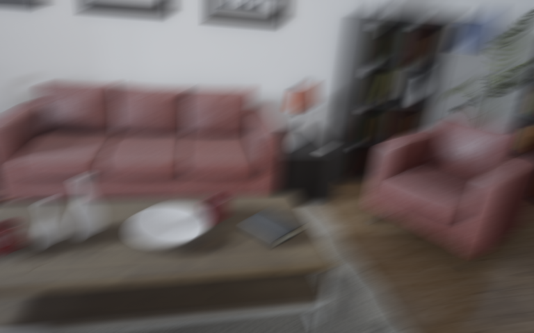
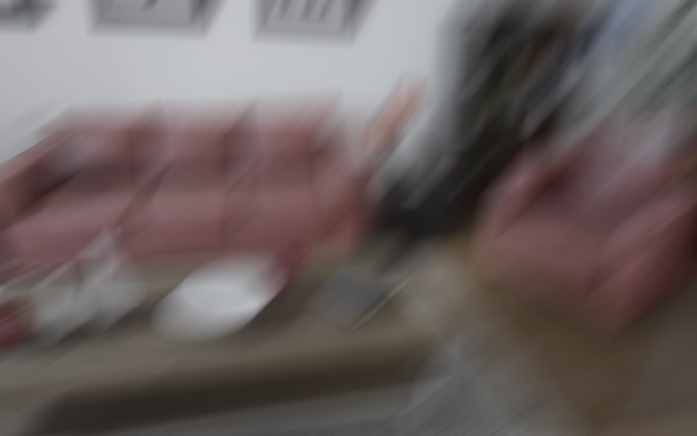
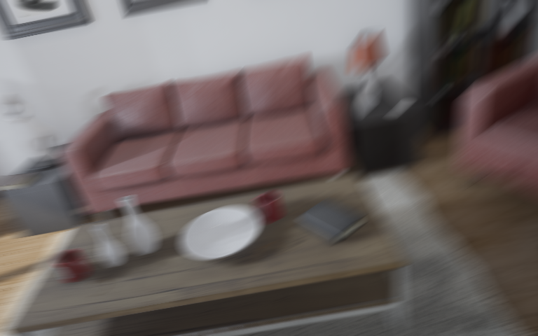
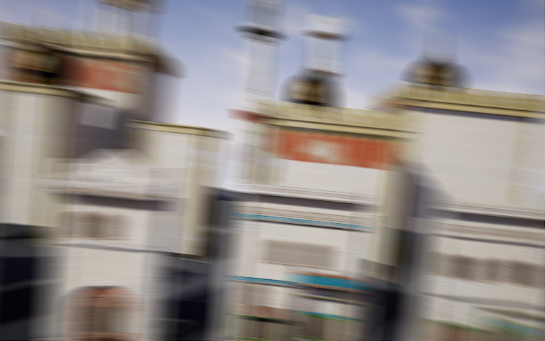
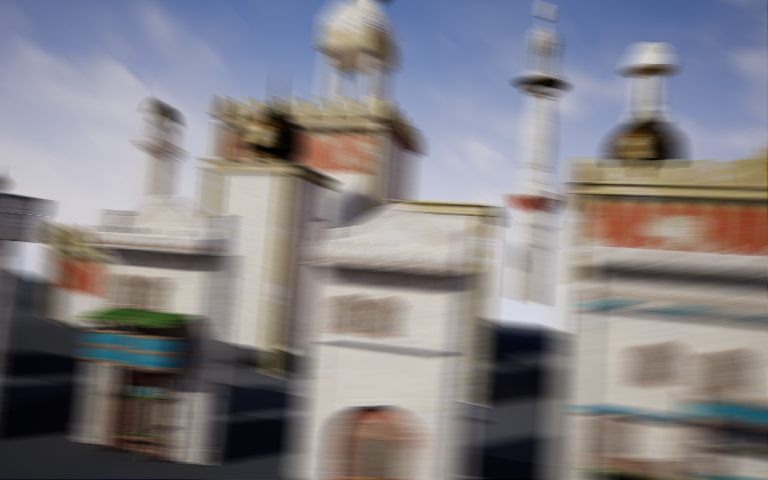
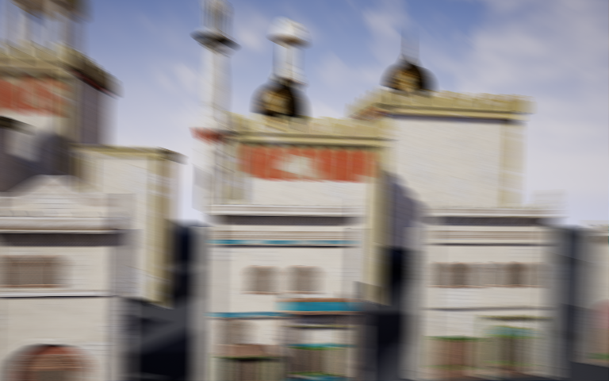
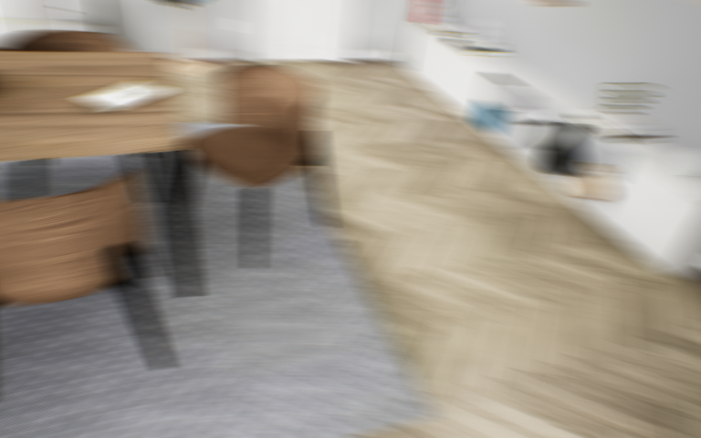
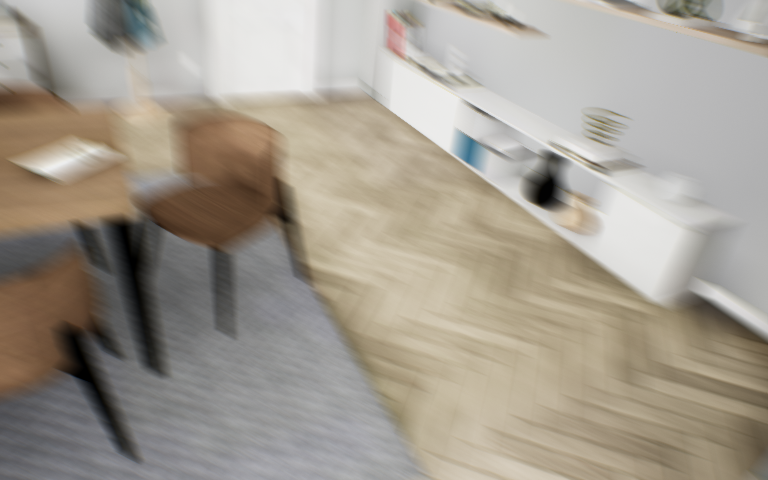
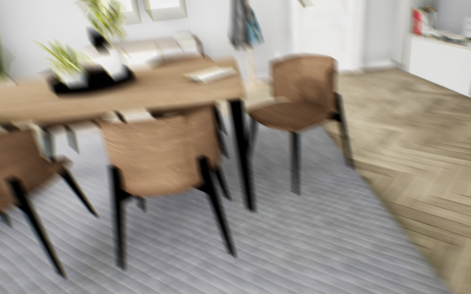
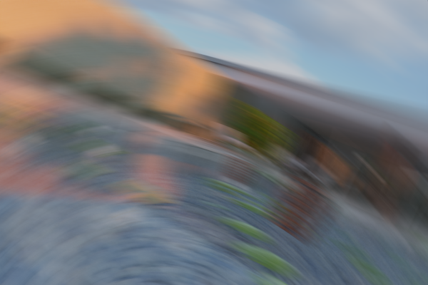
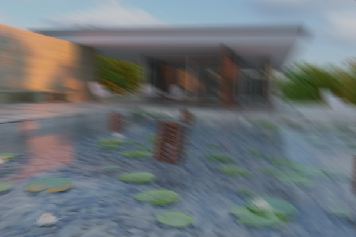
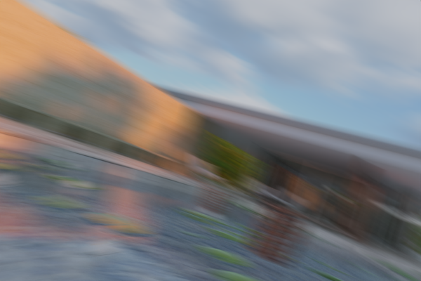
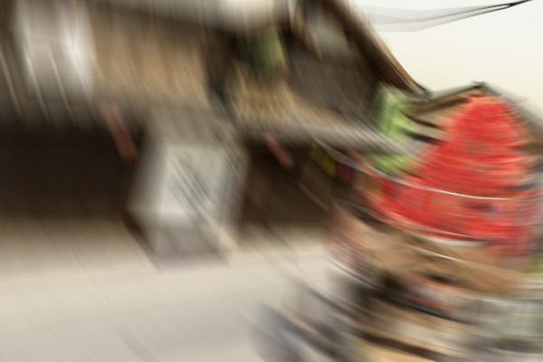
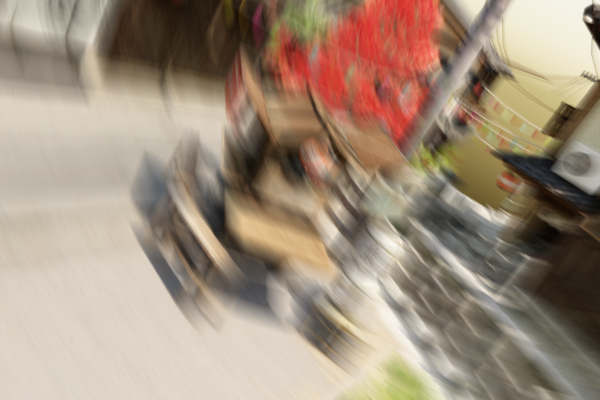
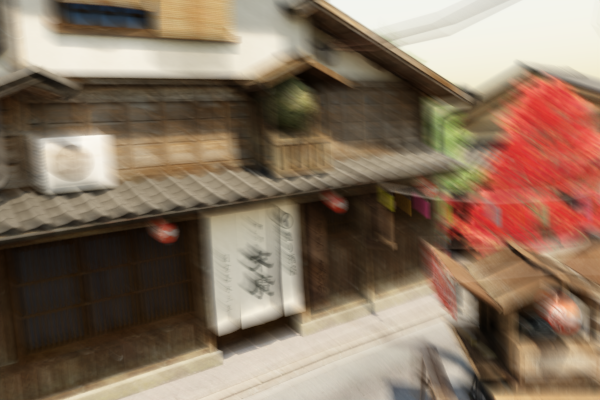
Real-world datasets
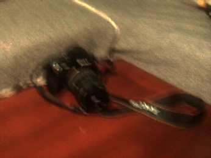
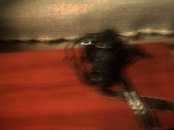
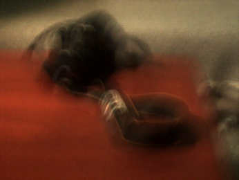
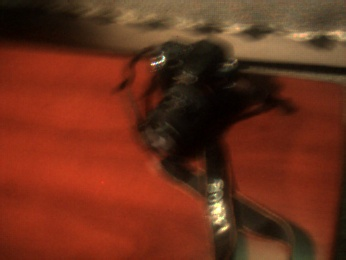

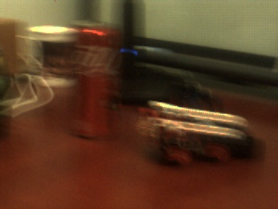
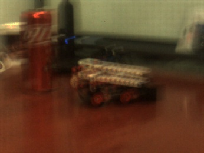
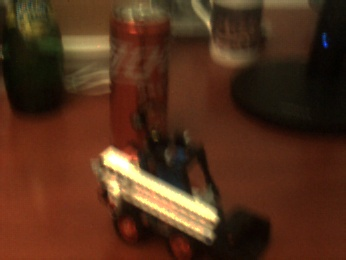
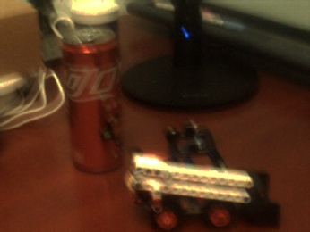
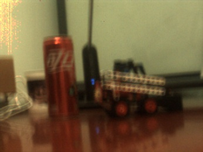
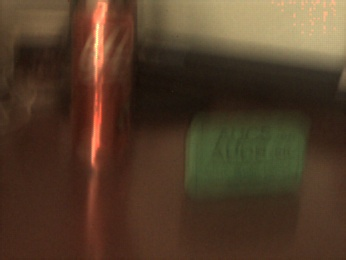
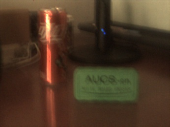
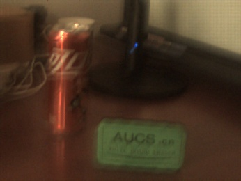
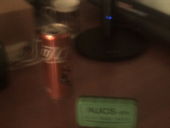
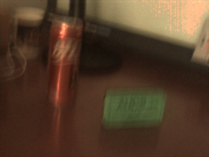
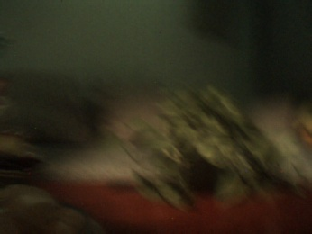
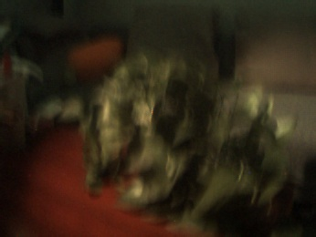
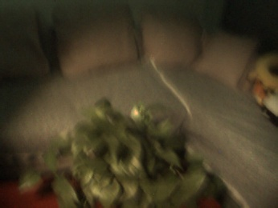
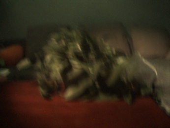
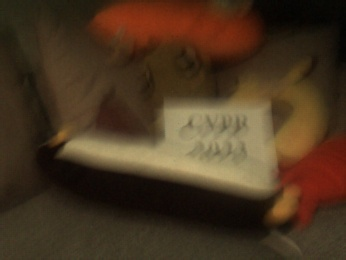
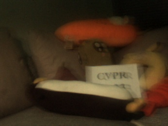
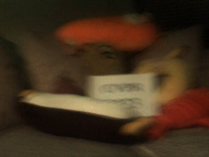
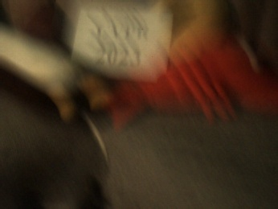
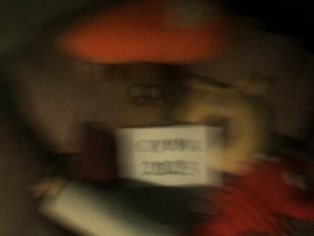
Comparison
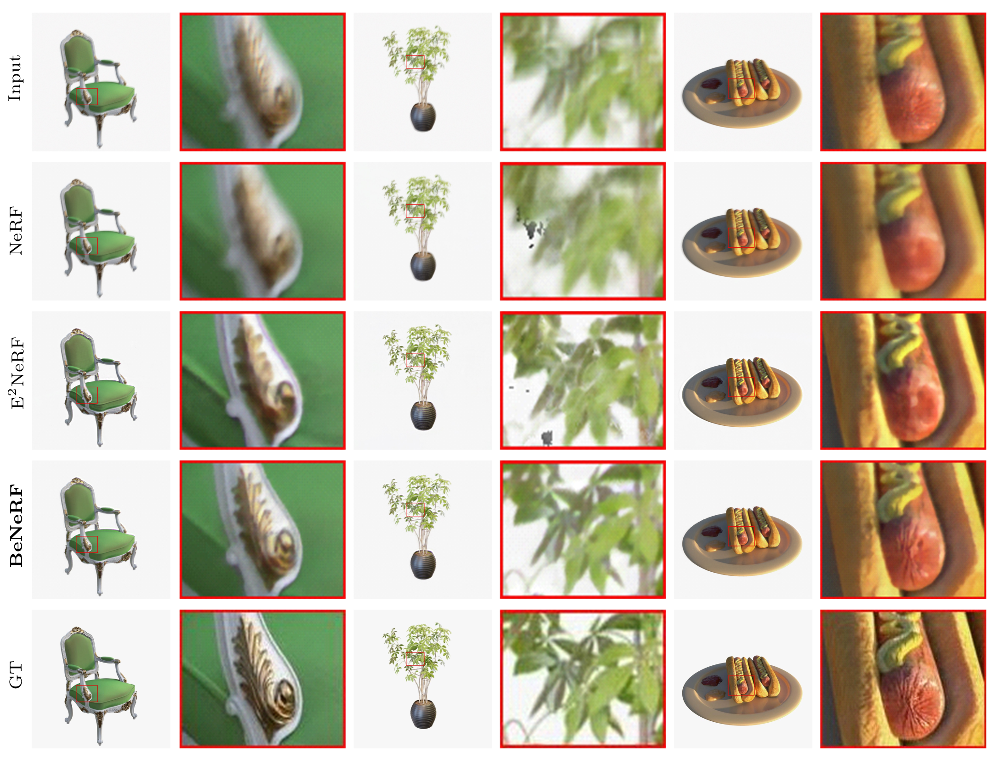
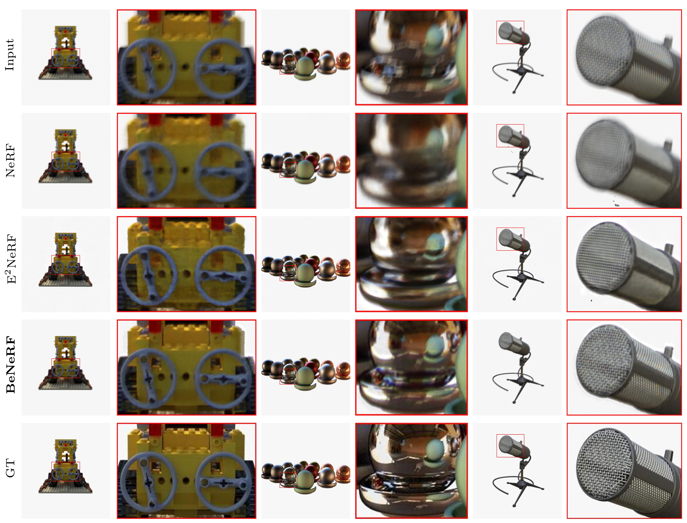